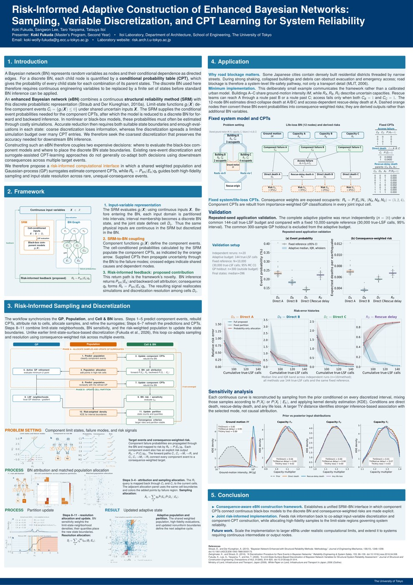

現在進行中の研究．南カルフォルニア大学で行われた UQ Summer School にてポスター発表を行いました． (2026/8)
【研究概要】
ベイジアンネットワークと物理シミュレーションによる構造信頼性評価をカップリングし，システム信頼性評価を行う枠組み「Enhanced Bayesian Network」において，確率変数の離散化と条件付き確率表の構築が必要となる．本研究では，破壊事象のリスク情報をフィードバックしながら，物理シミュレーション点のサンプリングと確率変数の離散化を同時に進める方法を提案する．
